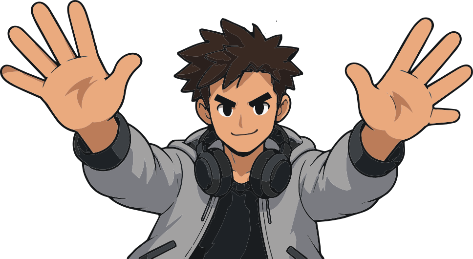
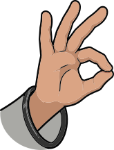
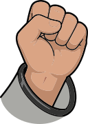
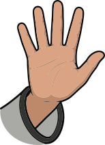
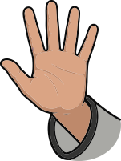
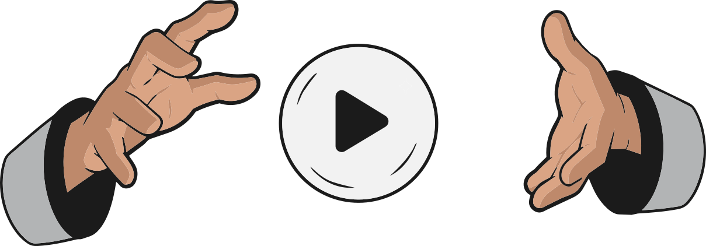

Pinch
Choose your instrument.

Fist
Control the volume.

Left Hand
Control expression with tremolo.

Right Hand
Control note and chord.

Touching Sound is a final degree project exploring new ways to interact with music through hand gestures and computer vision. Built with MediaPipe and the Web Audio API, it lets anyone compose and loop music without touching a single button.
Created by Yago Tarrasó as part of a Bachelor's Degree in Digital Music Expression. The project blends design, technology and music into a single playful experience.